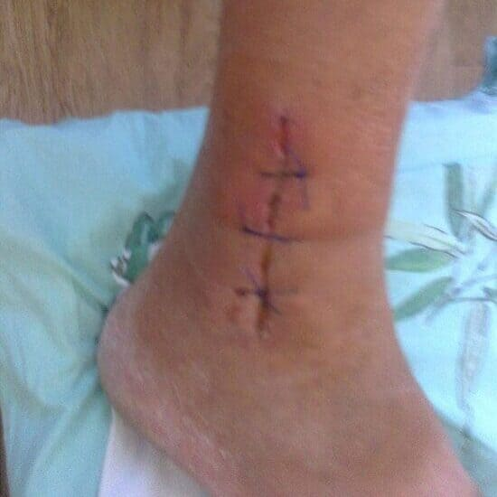

Comment guérir les douleurs articulaires
Je voudrais vous raconter comment j'ai réussi à vaincre l'arthrose de mes articulations du genou et l'ostéochondrose dans le bas du dos. Je ne suis pas médecin, je ne pourrai pas vous expliquer comment ça a guéri, je vais plutôt vous raconter ce qui s'est passé.
J'ai 62 ans et je suis retraité. Avant de prendra la retraite, j'ai travaillé dans des chantiers de construction. Au tout début, j'étais un simple maçon, puis petit à petit j'étais promu pour devenir l'ingénieur de chantier. Ceux qui connaissent ma profession savent qu'elle diffère considérablement du travail physique ordinaire. Non seulement on nous fait soulever des charges très lourdes d'une façon répétitive, mais cela s'accompagne par des accroupissements et des torsions de la colonne vertébrale. C'est le même topo tous les jours, l'hiver et l'été. Ce boulot a carrément tué mes genoux et le bas du dos.
Les douleurs continuent ont un impact négatif direct sur mon apparence. J'ai beaucoup vieilli ces 3 dernières années.
Heureusement, j'avais le droit de prendre ma retraite à 55 ans en raison de conditions de travail pénibles et dangereux. Je n'avais plus la force de continuer. La dernière année, j'ai réussi à tenir uniquement grâce à des piqûres anti-douleur. J'ai eu de la chance - il y avait un poste d'ingénieur à pourvoir. C'est moi qui l'ai eu vu mon expérience et les acquis professionnels. Ce nouveau travail s'est révélé bien plus facile. Ça m'a fait du bien et a eu un impact bénéfique sur ma fragile santé. La douleur s'est atténuée, j'ai même réussi à arrêter les anti-douleurs pendant une période. Mais trois ans avant la retraite définitive, j'ai eu un accident. J'ai sévèrement coincé ma jambe pendant la pêche. Le choc de douleur et un autre cycle d'anesthésiques ont affecté l'équilibre fragile et j'ai dû refaire face à la douleur aux genoux et au bas du dos.

À cause de la blessure, mon arthrite a accéléré sa progression.
Je ne veux même pas repenser à ces trois ans. Je vivais un enfer! Le matin, ma femme me faisait une piqûre de diclofenac, puis j'en recevais une autre au travail, puis encore une que ma femme me faisait à la maison le soir. Pourquoi je n'ai pas pris la retraite anticipée, pourriez-vous demander ? J'aidais mon fils. Ils venaient d'avoir un garçon et il s'est fait licencier. Je me sentais obligé d'aider sa famille.
La dernière année, je marchais avec une canne. Juste avant le dernier examen de avec le médecin du travail, je me suis dit que j'étais bon pour poser ma démission. J'allais être refusé à l'examen de toute manière.
Voici comment je me suis soigné
Selon mon expérience riche en matière des maladies articulaires, je peux affirmer que les médecins ne jurent que par la . Ou bien ils peuvent aussi parfois prescrire Antalcalm ou le Diclofenac.
Ça N'AIDE PAS!
De plus, les piqûres constantes de diclofenac que je devais subir pour soulager la douleur me causaient des maux d'estomac. Je devais prendre des sous-nitrates de bismuth pour protéger la paroi de mon estomac.
Pendant que je cherchais un remède vraiment efficace, j'ai eu 4 perforations pour éliminer le liquide. La dernière fois que ça s'est fait, il y avait du pus. Le médecin m'a dit qu'il était probable que j'aurais besoin d'une opération assez rapidement, un remplacement par une endoprothèse. Il s'agit des genoux en titane au lieu des miens qui ne valaient plus rien. J'ai commencé à me renseigner là-dessus. Il s'est avéré que même si la prothèse fonctionnait bien, je devrais marcher avec une canne. L'opération en elle-même n'était remboursée que de 80%. Il fallait donc payer les frais restants et les dépassements d'honoraires de sa propre poche. Le risque de complications était aussi très élevé. Bref, j'ai décidé de prendre mon temps pour bien réfléchir à tout ça.
J'ai décidé de prendre mon temps pour bien réfléchir sur mon avenir.
Je voyais bien que je n'avais aucune chance d'échapper au handicap. Et je ne disposais pas d'une telle somme d'argent!
Nous avons beaucoup réfléchi et discuté avec ma femme (elle a un coeur d'or) et on a décidé de tenter l'opération. A l'âge de 61 ans, la vie ne prend pas fin, et pour ce qui est de l'argent, il est fait pour être dépensé.
Voici qu'un miracle s'est soudainement produit!
En fait, je le dois à ma femme. Elle avait une amie d'école, la femme d'un fonctionnaire de la mairie. Ce gars souffrait de douleur aux genoux, tout comme moi. Ou peut être pas autant que moi.
Un jour, ma femme prenait l'air quand une voiture s'est arrêtée à sa hauteur. Ce fonctionnaire est descendu de la voiture et il est entré dans un magasin d'un pas rapide.
C'était ce jour-là que Sandra (ma femme) a appelé son amie et lui a demandé comment Georges a réussi à guérir ses genoux. Il n'a pas eu d'opération, à ce que l'on sache. Et en plus, les gens ne courent pas comme ça après une opération.
Ma femme Sandra m'a sauvé, et je lui en suis très reconnaissant.
Il s'est avéré qu'il s'agissait d'un nouveau produit - . Son mari qui à l'époque était au bout du boulot, en un mois était carrément de retour sur ses pieds. Et je le redis encore une fois - EN UN MOIS!
On était tous les deux très enthousiasmés, mais frustrés en même temps car le produit ne se vendait pas dans notre pays. Et on n'avait aucune idée de comment le commander depuis les Etats Unis, où presque tout se vent uniquement sur ordonnance. En un mot, je continuais à me préparer pour l'opération.
Un mois et demi plus tard, l'amie de Sandra l'a appelée et lui a dit que a été certifié en France. Ma femme l'a supplié d'obtenir plus d'informations et c'était confirmé. Nous pouvions désormais acheter le produit, malheureusement uniquement sur le site officiel. Je pense que j'étais un des premiers clients qui ont commandé!

J'ai commencé à traiter mes pauvres genoux et le bas du dos. Et je dois avouer que cela a commencé à faire effet! Au début, je pensais que ça fonctionnait comme un anesthésiant, parce qu'environ 5 à 10 minutes après la première application, la douleur s'est atténuée. Je me sentais beaucoup mieux, même le bas du dos ne me faisait plus mal. Pour être franc, j'avais abandonné tout espoir depuis un bon moment. J'espérais au moins pouvoir faire quelque chose pour mes genoux. J'étais déjà sur le point d'avoir une opération! Mais quand, après une semaine d'application du spray, j'ai pu me baisser et mettre mes chaussures sans utiliser un chausse-pied de 50 cm, je me suis rendu compte que GUERIT très bien!
Au bout de 2 semaines, je pouvais marcher une heure sans avoir mal aux genoux! J'étais clairement en train de guérir! Encore deux semaines plus tard, je me considérais en bonne santé - je n'avais plus de douleur! Je pouvais facilement me baisser, marcher de longues distances et faire du vélo (j'adore en faire).
Je pouvais refaire du vélo et faire des promenades de deux heures.
Ça fait six mois que je suis guéri. Je n'ai plus de douleur! Malgré le fait que j'ai arrêté d'utiliser il y a des mois. Maintenant, je vais à la pêche, je travaille dans mon jardin à la campagne et j'adore garder mon petit-fils! Ma femme et moi projetons de faire un voyage dans le sud d'Espagne! Ma femme n'arrête pas de me parler de la beauté des paysages là-bas.
Quand vous êtes en bonne santé, jouer avec votre petit-fils n'est pas un calvaire mais un bonheur.
Donc si vous avez de l'arthrite, de l'ostéochondrose ou de l'arthrose, bref si vos articulations et votre dos vous font mal, notez ces informations : guérit les articulations!
Jean Dupuy, Clermond-Ferrand
J'utilise depuis deux semaines maintenant. Je suis très contente du résultat. Je ne voyais pas la lumière du jour à cause de cette maudite ostéochondrose. Le spray est très utile. Je l'applique sur les zones affectées et je n'y pense plus jusqu'au lendemain. Elle agit très vite. Une fois, j'avais une douleur aigüe au bas du dos et l'a éliminée en 5 minutes!